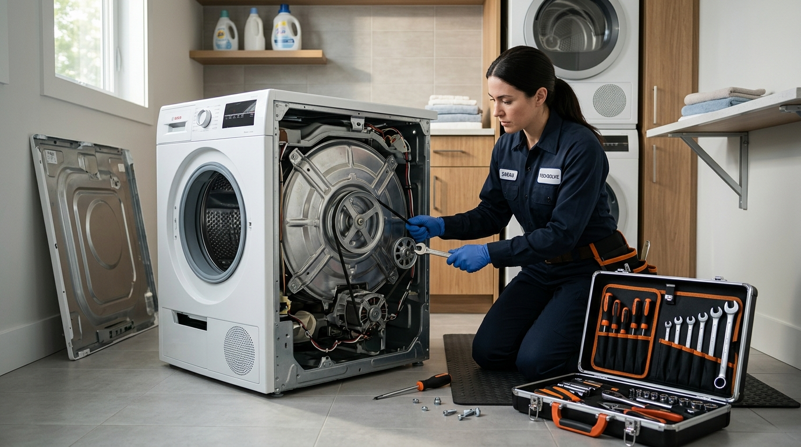

Beko, dünya genelinde ve ülkemizde ev teknolojileri alanında güvenilirliğini kanıtlamış, yenilikçi çözümleriyle hayatımızı kolaylaştıran lider markalardandır. Akıllı ev konseptine uygun buzdolapları, yüksek yıkama performansına sahip çamaşır ve bulaşık makineleri, iklimlendirme sistemleri ve ankastre ürünleriyle Beko, evlerimizin vazgeçilmez bir parçasıdır.
Ancak ne kadar yüksek teknolojiye sahip olursa olsun, sürekli çalışan elektrikli ev aletlerinde zamanla mekanik aşınmalar, voltaj dalgalanmalarına bağlı arızalar veya bakımsızlık kaynaklı performans düşüşleri meydana gelebilir. Böyle anlarda uzman bir destek almak cihazların ömrünü doğrudan etkiler.
Bölgede yıllardır güvenin simgesi haline gelen Sertler Soğutma, arızalanan Beko eşyalarınız için en hızlı, güvenilir ve kalıcı çözümleri üretmektedir. Tarsus Beko Servisi alanındaki geniş tecrübemiz ve uzman kadromuzla, cihazlarınızı ilk günkü verimliliğine kavuşturmak için kesintisiz teknik destek sunuyoruz.
Evlerde günlük yaşam akışını sağlayan cihazların aniden bozulması büyük aksaklıklara ve strese yol açabilir. Bozulma riskiyle karşı karşıya kalan gıdalar veya yıkanmayı bekleyen biriken çamaşırlar acil müdahale gerektirir.
İşte bu noktada Sertler Soğutma, gelişmiş araç filosu ve donanımlı teknisyenleri ile devreye girmektedir. Tarsus Beko Servisi çağrılarınıza aynı gün içerisinde yanıt vererek adresinize ulaşıyor ve probleminizi yerinde çözüyoruz.
Beko marka ürünler, özel inverter motor teknolojilerine, hassas elektronik sensörlere ve gelişmiş kart mimarilerine sahiptir. Bu nedenle amatör kişilerin yapacağı yetkisiz müdahaleler cihazlarınıza tamiri imkansız zararlar verebilir.
Sertler Soğutma teknisyenleri, Beko ürün ailesinin tüm serilerine ve teknik şemalarına tam hakimiyetle hizmet sunar. Tarsus Beko Servisi ekibimiz, modern arıza tespit cihazları kullanarak sorunun kaynağını noktasal olarak belirler.
Şeffaf hizmet anlayışımız gereği, işlem öncesinde tüm süreç hakkında müşterilerimizi detaylı şekilde bilgilendiriyoruz. Müşteri onayı alınmadan hiçbir tamir veya parça değişimi adımı başlatılmaz.
Tarsus genelinde sunduğumuz profesyonel hizmetlerle müşteri memnuniyetini en üst seviyede tutmayı misyon edindik. Tarsus Beko Servisi arayışlarınızda Sertler Soğutma güvencesini tercih ederek cihazlarınızı güvenle teslim edebilirsiniz.
Cihazlarınızın performansını artırmak, enerji tüketimini düşürmek ve ömrünü uzatmak için 7/24 hizmetinizdeyiz. Sertler Soğutma kalitesiyle Beko ev aletleriniz emin ellerde çalışmaya devam eder.
Tarsus Beko Servisi Kaliteli Onarım Hizmetleri
Beyaz eşya ve ev teknolojilerinde kaliteli onarım, sadece bozulan bir bileşeni değiştirmekten ibaret değildir. Cihazın genel çalışma dinamiğini analiz etmek ve gelecekte oluşabilecek arıza risklerini ortadan kaldırmak kaliteli onarımın temelini oluşturur.
Tarsus Beko Servisi kulvarında uzun yıllara dayanan saha deneyimimizle Sertler Soğutma olarak standartların ötesinde bir teknik destek sunuyoruz. Beko markasının sunduğu teknolojik altyapıya uygun donanım ve ekipmanlarımızla onarım süreçlerini titizlikle yönetiyoruz.
Kaliteli onarım sürecinin ilk adımı, cihazın detaylı incelemeden geçirilmesidir. Sertler Soğutma teknisyenleri, adrese ulaştıklarında cihazın sadece arızalı aksamını değil, ilişkili tüm sistemlerini teste tabi tutar.
Örneğin, soğutmayan bir Beko buzdolabında sadece gaza bakılmaz; fan motoru, kompresör rölesi, sensör dirençleri ve kapı fitillerinin durumu da kapsamlıca incelenir. Tarsus Beko Servisi ekibimiz bu sayede bütüncül bir onarım sağlar.
Çamaşır ve bulaşık makinelerinde meydana gelen sarsıntı, yüksek ses veya su tahliye problemleri de kalıcı metodlarla giderilmektedir. Sertler Soğutma, deneysel tamir yöntemlerini kesinlikle kullanmaz.
Onarım esnasında Beko standartlarına uygun kalibre edilmiş dijital ölçüm aletleri ve orijinal yedek parçalar tercih edilmektedir. Bu durum cihazın orijinal yapısının korunmasını ve ilk günkü verimle çalışmasını sağlar.
Süreç boyunca evinizin ve çalışma alanının temiz tutulmasına büyük özen gösterilir. Sertler Soğutma personelleri, hijyen ve nezaket kurallarını ön planda tutarak işlemleri tamamlar.
Onarımı biten Beko cihazlar, güvenlik ve fonksiyon testlerinden geçirildikten sonra çalışır durumda müşteriye teslim edilir. Yapılan tüm müdahaleler servis formu ile resmi kayıt altına alınır.
Bölge genelinde kalitesiyle öne çıkan Sertler Soğutma, cihazlarınızın değerini korumanız için en doğru adrestir. Tarsus Beko Servisi ihtiyaçlarınızda profesyonel bir ekiple çalışmanın konforunu yaşayabilirsiniz.
Aksaklık yaşayan Beko eşyalarınız için vakit kaybetmeden bizimle iletişime geçebilirsiniz. Sertler Soğutma uzmanlığıyla cihazlarınız uzun yıllar evinizde hizmet vermeye devam eder.
Sertler Soğutma Beko Arıza Tespiti ve Tamiri
Bir cihazdaki arızanın doğru teşhis edilmesi, hem zaman kaybını hem de gereksiz parça değişimi maliyetlerini engeller. Yanlış tespitler, cihazın başka aksamlarına zarar verebileceği gibi kullanıcı için de mağduriyet oluşturur. Benzer şekilde evinizdeki diğer akıllı ev teknolojileri için kurumsal Adapazarı Beko servisi ekiplerinden periyodik bakım desteği alabilirsiniz.
Sertler Soğutma, Beko ürünlerinin arıza tespiti ve tamirinde en gelişmiş teknolojik imkanları kullanmaktadır. Tarsus Beko Servisi ekiplerimiz, bilgisayarlı arıza analiz cihazları ile sorunları kısa sürede saptar.
Beko beyaz eşyalar ve iklimlendirme sistemleri, herhangi bir aksaklık anında dijital ekranlarında arıza kodları gösterir. Sertler Soğutma uzmanları bu hata kodlarının arka planındaki teknik nedeni hızla çözer:
- Beko Çamaşır Makinesi Hata Kodları: E01 (Kapı emniyet kilidi arızası), E04 (Su alma problemi), E11 (Motor veya triyak arızası), E18 (Aşırı köpük veya tahliye tıkanıklığı).
- Beko Bulaşık Makinesi Hata Kodları: E01 (Su sızıntısı emniyeti aktif), E02 (Su dolum hatası), E04 (Isıtıcı rezistans arızası).
- Beko Buzdolabı Hata Kodları: E1 (Evaporatör sensör arızası), E4 (Defrost Isıtıcı hatası), E9 (Soğutma yetersizliği/gaz kaçağı).
Arıza kodu saptandıktan sonra Sertler Soğutma teknisyeni fiziki ve elektriksel ölçümlerle teşhisi doğrular. Ölçülen voltaj, akım ve direnç değerleri Beko fabrika verileriyle karşılaştırılır.
Sorunun kaynağı netleştikten sonra müşteriye detaylı bilgi sunulur ve onarım aşamasına geçilir. Tarsus Beko Servisi ekibimiz, yerinde tamir imkanı sunarak cihazların atölyeye taşınma ihtiyacını en aza indirir.
Tamir işlemlerinde lehim kalitesinden kablo izolasyonuna, vida sıkılıklarından sızdırmazlık contalarına kadar her ayrıntıya dikkat edilir. Sertler Soğutma işini şansa bırakmaz.
Arıza tespiti ve tamirinde sergilediğimiz bu bilimsel ve sistemli yaklaşım, Beko cihazlarınızın ilk seferde doğru şekilde onarılmasını sağlar. Tarsus Beko Servisi kalitemizle sorunlarınıza kesin çözümler sunuyoruz.
Cihazınız hata kodu veriyor veya garip sesler çıkarıyorsa Sertler Soğutma uzmanlığına başvurabilirsiniz. Tarsus Beko Servisi ekibimiz adresinizde sorunsuz bir onarım gerçekleştirecektir.
Tarsus Beko Servisi Yıllık Bakım Avantajları
Beko Cihazınız İçin Hemen Randevu Alın
Orijinal yedek parça ve 1 yıl servis garantisiyle Tarsus genelinde aynı gün adresinizdeyiz.
Beyaz eşyalar ve iklimlendirme cihazları, düzenli bakıma ihtiyaç duyan karmaşık mekanik ve elektronik sistemlerdir. Yılda en az bir kez yapılan periyodik bakımlar, cihazların aniden arızalanmasını önler.
Tarsus Beko Servisi olarak Sertler Soğutma çatısı altında sunduğumuz periyodik bakım hizmetleri, eşyalarınızın kullanım ömrünü gözle görülür şekilde uzatmaktadır. Bakımsız kalan cihazlar zamanla daha fazla enerji tüketir ve yıpranır.
Yıllık bakım yaptırmanın kullanıcılara sağladığı başlıca avantajlar şunlardır:
- Cihazın enerji verimliliği artar, elektrik ve su faturalarında belirgin düşüş sağlanır.
- Beklenmedik anlarda oluşabilecek yüksek maliyetli arızaların önüne geçilir.
- Buzdolabı ve klimalarda bakteri, küf ve kötü koku oluşumu engellenerek hijyenik ortam sağlanır.
- Hareketli mekanik parçaların aşınması yavaşlatılır, cihazın çalışma gürültüsü azalır.
- Isıtma ve soğutma performansları fabrika çıkış değerlerine geri döner.
Sertler Soğutma tarafından gerçekleştirilen Beko yıllık bakımlarında, cihazın tüm iç ve dış bileşenleri detaylı temizlik ve kontrolden geçirilir. Fıskiyeler, filtreler, kondanserler ve tahliye hatları açılır.
Ayrıca elektrik tesisatı bağlantıları, motor kömürleri, rulman durumları ve sensör kalibrasyonları tek tek incelenir. Tarsus Beko Servisi bakımları cihazınıza tam kapsamlı bir koruma sağlar.
Periyodik bakımı yapılan bir Beko çamaşır makinesi çamaşırları daha temiz yıkar; bakımlı bir Beko buzdolabı ise gıdaları çok daha uzun süre taze tutar. Sertler Soğutma yaşam kalitenizi yükseltir.
Düzenli bakım alışkanlığı edinen müşterilerimiz, cihazlarını 10 yılı aşkın süre boyunca sorunsuz bir şekilde kullanabilmektedir. Tarsus Beko Servisi olarak bu bilinci yaymayı hedefliyoruz.
Siz de Beko cihazlarınızın sağlığını korumak ve enerji tasarrufu sağlamak istiyorsanız yıllık bakım randevunuzu oluşturabilirsiniz. Sertler Soğutma uzman kadrosuyla hizmet vermeye hazırdır.
Sertler Soğutma Uzmanlığıyla Beko Performans Artışı
Zamanla yıpranan, kireçlenen veya tozlanan Beko ev aletleri, ilk günkü yüksek çalışma performansını kaybetmeye başlayabilir. Cihaz çalışıyor gibi görünse de yıkama kalitesi düşebilir veya soğutma süresi uzayabilir. Alman teknolojisine sahip dayanıklı ev aletlerinizde ise güvenilir Adapazarı Bosch servisi ayrıcalıklarından yararlanarak arızaları erkenden önleyebilirsiniz.
Sertler Soğutma, Beko cihazlarınızın kaybettiği performansı geri kazandırmak için özel performans artırma teknikleri uygular. Tarsus Beko Servisi süreçlerimizde cihazınızın tüm parametreleri en üst seviyeye çıkarılır.
Buzdolaplarında kondanser temizliği ve fan ayarları yapılarak hava sirkülasyonu maksimuma ulaştırılır. Sertler Soğutma teknik ekibi, soğutucu gaz basınçlarını ideal değerlere getirerek dondurma hızını artırır.
Çamaşır makinelerinde kazan kireç arındırma işlemleri, amortisör yenilemeleri ve su giriş ventil temizlikleri yapılır. Tarsus Beko Servisi müdahaleleriyle cihazın sıkma performansı yükseltilir ve titreşim engellenir.
Bulaşık makinelerinde ise sirkülasyon motoru basınç ayarları ve fıskiye temizlikleri gerçekleştirilir. Sertler Soğutma, suyun her noktaya eşit basınçla ulaşmasını sağlayarak lekeli bulaşık sorununu ortadan kaldırır.
Performansı artırılan cihazlar, işlerini daha kısa sürede tamamlayarak şebekeden daha az kaynak çeker. Bu da hem zamandan hem de bütçenizden tasarruf etmeniz anlamına gelir.
Beko klimalarda yapılan iç ve dış ünite derin temizlikleri, hava üfleme debisini yükselterek ortamın saniyeler içinde ısınmasını veya soğumasını sağlar. Tarsus Beko Servisi iklimlendirmede konfor sunar.
Cihazlarınızın yavaşladığını, gürültülü çalıştığını veya işini iyi yapmadığını düşünüyorsanız yenisini almak zorunda değilsiniz. Sertler Soğutma performansı düşmüş Beko eşyalarınıza adeta yeniden hayat verir.
Tarsus genelinde sunduğumuz uzmanlık hizmetleriyle evinizdeki teknolojiyi en verimli şekilde kullanmanızı sağlıyoruz. Tarsus Beko Servisi talepleriniz için firmamıza dilediğiniz an ulaşabilirsiniz.
Sertler Soğutma ile cihazlarınızın performansını zirveye taşıyın, Beko kalitesini tam anlamıyla yaşamaya devam edin.
Tarsus Beko Servisi Mobil Arıza Ekibi
Teknik servis hizmetinde hız ve yerinde müdahale imkanı, müşterilerin en çok önem verdiği konuların başında gelir. Arızalanan devasa beyaz eşyaların taşınması hem zahmetli hem de cihazın darbe alma riskini artıran bir süreçtir.
Sertler Soğutma, bu zorlukları ortadan kaldırmak adına Tarsus'un dört bir yanına yayılmış donanımlı mobil arıza ekipleriyle hizmet vermektedir. Tarsus Beko Servisi mobil araçlarımız tam teşekküllü bir teknik atölye donanımına sahiptir.
Mobil ekiplerimiz çağrı merkezimize düşen bildirimler doğrultusunda konuma en yakın araç üzerinden adresinize yönlendirilir. Sertler Soğutma navigasyon takip sistemiyle zaman kaybı tamamen engellenmektedir.
Gezici araçlarımız içerisinde Beko ürün grubunda en sık ihtiyaç duyulan orijinal yedek parçalar, test cihazları ve montaj ekipmanları yer alır. Bu sayede arızaların %90'ı evinizde yerinde giderilir.
Mobil arıza ekibimizin sunduğu başlıca avantajlar şunlardır:
- Cihazların nakliye esnasında çizilme veya darbe alma riski ortadan kalkar.
- Günlerce servis bekleme çilesi biter, arızalar aynı gün içerisinde çözüme kavuşturulur.
- Onarım süreci tamamen müşterinin gözü önünde şeffaf bir şekilde gerçekleşir.
- Taşıma maliyetleri oluşmadığı için daha ekonomik bir servis hizmeti sunulur.
Sertler Soğutma mobil teknisyenleri, güler yüzlü ve saygılı hizmet anlayışıyla hareket eder. Evinize konuk olan ekiplerimiz hijyen kurallarına uyarak galoş ve koruyucu örtüler kullanır.
Özellikle buzdolabı arızaları gibi acil durumlarda mobil ekiplerimiz öncelikli rotalar oluşturur. Gıdalarınız bozulmadan soğutma arızası adresinizde hızla çözülür.
Tarsus'un merkez mahallelerinden en uzak belde ve köylerine kadar uzanan geniş bir mobil hizmet ağımız mevcuttur. Tarsus Beko Servisi nerede olursanız olun kapınıza kadar gelmektedir.
Hızlı, pratik ve yerinde teknik servis desteği almak istiyorsanız mobil ekiplerimiz göreve hazırdır. Sertler Soğutma telefon numaralarını arayarak anında konumunuza ekip çağırabilirsiniz.
Sertler Soğutma Beko Kompresör Değişimi Hizmeti
Buzdolabı ve klima gibi soğutma odaklı cihazların kalbi hiç şüphesiz kompresörlerdir (motor). Soğutucu gazı sistem içerisinde pompalayan kompresörün bozulması, cihazın soğutma fonksiyonunu tamamen yitirmesine neden olur.
Sertler Soğutma, Beko buzdolabı ve klimalarında meydana gelen kompresör arızalarında uzman kadrosuyla kesin çözümler sunar. Tarsus Beko Servisi kapsamında kompresör değişimi işlemleri yüksek teknik hassasiyetle yürütülmektedir.
Kompresörün kilitlenmesi, sargılarının yanması veya basınç düşüklüğü yaşaması durumunda yenisiyle değiştirilmesi gerekir. Sertler Soğutma teknisyenleri öncelikle motorun durumunu dijital ölçüm aletleriyle teyit eder.
Kompresör değişimi sıradan bir sök-tak işlemi değildir; hassas kaynak ve vakumlama adımları gerektirir:
- Eski arızalı kompresör oksijen kaynağı veya boru kesici aparatlarla sistemden dikkatlice sökülür.
- Soğutma boru hattı içerisinde biriken yağ ve tortular özel temizleyici gazlarla yıkanır.
- Beko cihaza tam uyumlu orijinal sıfır kompresör yerine monte edilerek gümüş kaynak ile sızdırmaz şekilde bağlanır.
- Sistemde kalabilecek nem ve havayı tahliye etmek için vakum pompası ile en az 20-30 dakika vakumlama yapılır.
- Gramajına uygun Beko onaylı soğutucu gaz (R600a, R134a, R32 vb.) sisteme şarj edilir.
Sertler Soğutma, kompresör değişimi yapılan Beko cihazları basınç ve soğutma testine tabi tutar. Cihazın istenen soğukluk değerlerine ulaştığından emin olunmadan adresten ayrılınmaz.
Yapılan kompresör değişimi ve gaz dolum işlemleri firmamızın 1 yıllık resmi garantisi altındadır. Tarsus Beko Servisi kalitemizle cihazınıza yeni bir motor ömrü kazandırıyoruz.
Kompresör arızaları yüksek maliyetli görünebilir ancak Sertler Soğutma bütçe dostu fiyat politikasıyla yeni cihaz alma yükünü ortadan kaldırır.
Buzdolabınızın motoru çalışmıyor, tık tık ses yapıp duruyor veya aşırı ısınıyorsa Tarsus Beko Servisi çağrı merkezimizi arayarak kompresör değişim desteği alabilirsiniz.
Ekonomik Tarsus Beko Servisi Seçenekleri
Teknik servis hizmetlerinde kalite kadar sunulan fiyatlandırmanın adil ve makul olması da müşteriler için büyük önem taşır. Yüksek servis ücretleri veya belirsiz maliyetler kullanıcıları mağdur edebilmektedir. İskandinav mühendisliği iklimlendirme ve beyaz eşya çözümleri için profesyonel bir Hatay Electrolux servisi desteğine başvurabilirsiniz.
Sertler Soğutma, Tarsus ve çevresinde yürüttüğü Tarsus Beko Servisi hizmetlerinde tamamen şeffaf, dürüst ve ekonomik fiyat seçenekleri sunmaktadır. Amacımız kaliteli hizmeti her bütçeye ulaştırmaktır.
Firmamızda mantıksız ve sabit matbu fiyatlar yerine; arızanın türüne, değişecek parçanın maliyetine ve harcanacak işçilik süresine göre şekillenen esnek bir fiyatlandırma modeli uygulanır.
Arıza tespiti tamamlandıktan sonra teknisyenimiz yapılması gereken işlemleri ve maliyet tablosunu müşteriye açıkça sunar. Müşterimizin onayı olmadan hiçbir faturaya ek kalem yazılmaz.
Ekonomik servis anlayışımızın temel taşları şunlardır:
- Gereksiz parça değişimlerinin önüne geçilerek onarılabilecek aksamların tamir edilmesi.
- Beko orijinal yedek parçalarının doğrudan tedarik edilerek uygun maliyetlerle sunulması.
- Telefonda çözülebilecek basit kullanım sorunlarında servis ücreti talep edilmeden yönlendirme yapılması.
- Aynı adreste birden fazla cihazın bakımı veya tamiri yapıldığında özel indirim uygulanması.
Sertler Soğutma, sunduğu yüksek işçilik kalitesine rağmen Tarsus piyasasındaki en makul fiyat skalasını korumayı başarmıştır. Müşteri memnuniyetini finansal kazançların önünde tutuyoruz.
Ödemelerinizde kolaylık sağlamak adına kapıda nakit ödeme imkanının yanı sıra mobil POS cihazlarımız ile kredi kartına taksit veya tek çekim seçenekleri sunuyoruz.
Cebinizi yormadan Beko eşyalarınızı güvence altına almak için Tarsus Beko Servisi uzmanlığımızdan faydalanabilirsiniz. Sertler Soğutma ekonomik ve kaliteli çözümleriyle her zaman yanınızdadır.
Bütçenize uygun teknik destek almak ve detaylı fiyat bilgisi edinmek için iletişim numaralarımızdan bizlere dilediğiniz an ulaşabilirsiniz.
Sertler Soğutma Beko Kart Onarımı
Modern Beko beyaz eşyalar ve klimalar, bünyelerinde bulunan elektronik ana kartlar (mikroişlemciler) vasıtasıyla yönetilir. Kartlar; su alma, ısıtma, motor devri ve program süreleri gibi tüm fonksiyonları organize eden beyin merkezidir.
Şebekedeki ani voltaj yükselmeleri, yıldırım düşmesi, nem veya yaşlanma nedeniyle Beko elektronik kartlarında yanma veya program çökmesi yaşanabilir. Kartı bozulan cihaz tamamen durur veya anlamsız hatalar vermeye başlar.
Sıradan tamirciler kart arızalarında direkt olarak çok yüksek maliyetli sıfır kart değişimini önerir. Ancak Sertler Soğutma, gelişmiş elektronik laboratuvarında Beko kart onarımı hizmeti sunarak maliyetleri yarı yarıya düşürmektedir.
Tarsus Beko Servisi ekiplerimiz adreste kartın arızalı olduğunu tespit ettiğinde kartı hassas şekilde sökerek laboratuvarımıza getirir. Elektronik uzmanlarımız kart üzerindeki arızayı tespit eder:
- Yanmış röleler, patlamış kondansatörler ve triyaklar yenileriyle değiştirilir.
- Soğuk lehim oluşmuş pat yolları ve iletken hatlar özel mikroskop altında yeniden lehimlenir.
- İşlemci mikroçipleri ve hafıza entegreleri test edilerek yazılımsal çökmeler yeniden yüklenir.
- Onarılan kart simülasyon test standında saatlerce çalıştırılarak kararlılığı kontrol edilir.
Kart tamir imkanının bulunmadığı veya kartın tamamen kömürleştiği durumlarda ise Beko orijinal sıfır kart montajı gerçekleştirilir. Sertler Soğutma her iki durumda da garantili çözümler sunar.
Kart onarımı sayesinde müşterilerimiz yeni kart satın alma bütçesinden ciddi tasarruf sağlar. Tarsus Beko Servisi kalitemiz ile bütçenizi korurken cihazınızı yeniden çalışır hale getiriyoruz.
Onarılan veya yenilenen kartlar 1 yıl süreyle firmamızın garantisi altındadır. Aynı karttan kaynaklı bir aksaklıkta ücretsiz destek sunulmaktadır.
Beko cihazınızın ekranı gelmiyorsa, komut almıyorsa veya sürekli sigorta attırıyorsa kart arızası olabilir. Sertler Soğutma kart onarım uzmanlığıyla sorununuzu hızla çözer.
Tarsus Beko Servisi Telefon Numarası
Beko beyaz eşya veya iklimlendirme cihazlarınızda aniden beliren bir arıza durumunda, güvenilir bir teknik servise hızla ulaşabilmek büyük önem taşır. Yanlış veya ulaşılamayan iletişim kanalları zaman kaybına ve mağduriyetin artmasına sebep olur. Sertler Soğutma, Müşterilerinin dilediği her an ulaşabilmesi adına kesintisiz iletişim altyapısı sunmaktadır. Tarsus Beko Servisi telefon numarası üzerinden çağrı merkezimize haftanın 7 günü 24 saat boyunca kesintisiz olarak erişebilirsiniz. Gelişmiş hijyen programlarına sahip ev aletleriniz için ise garantili Adapazarı Hotpoint servisi hizmetlerini tercih edebilirsiniz.
Telefon hattımızı aradığınızda sizi karşılayan deneyimli müşteri temsilcilerimiz, öncelikle cihazınızın modeli ve yaşadığınız arızanın belirtileri hakkında detaylı bilgi talep eder. Sorununuz basit bir kullanıcı ayarından veya kapalı unutulmuş bir vanadan kaynaklanıyorsa, temsilcimiz telefonda ücretsiz yönlendirme yaparak sorununuzu anında çözmenize yardımcı olur. Bu sayede boş yere servis bekleme durumunda kalmazsınız.
Telefonda çözülemeyen teknik arızalarda ise adres bilginiz kayda alınarak konumunuza en yakın mobil Tarsus Ariston Servisi veya Beko servis ekibimiz derhal yönlendirilir. Sertler Soğutma iletişim kanallarımız üzerinden sadece arıza kaydı oluşturmakla kalmaz; bakım randevuları alabilir, yedek parça durumunu sorgulayabilir veya cihazınızın servis sürecindeki son durumu hakkında bilgi edinebilirsiniz.
Gelişen teknolojiye uyum sağlayan firmamız, telefon hatlarının yanı sıra farklı dijital kanallardan da servis başvurusu kabul etmektedir. Web sitemizdeki online servis talep formunu doldurarak, WhatsApp destek hattımız üzerinden arızalı cihazın fotoğraf veya videosunu göndererek de saniyeler içinde Tarsus Beko Servisi kaydı oluşturabilirsiniz. Müşteri odaklı iletişim ağımız sayesinde Tarsus genelinde en hızlı dönüş sağlayan firma konumundayız.
Acil durum teknik servis taleplerinizde çağrı merkezimiz öncelikli kayıt oluşturur. Özellikle buzdolabı arızalarında gıdalarınızın bozulmaması adına kaydınız "acil servis" koduyla saha ekibine iletilir. Sertler Soğutma telefon numaramızı rehberinize kaydederek Beko cihazlarınızda yaşayabileceğiniz her türlü aksaklıkta tek bir tıkla profesyonel teknik desteğe ulaşabilirsiniz.
Sertler Soğutma Beko Su Sızıntısı Tamiri
Çamaşır makineleri, bulaşık makineleri ve bazı buzdolabı modellerinde meydana gelen su sızıntıları, evlerde parkelerin kabarmasına, mobilyaların zarar görmesine ve hatta alt komşunun tavanında su lekeleri oluşmasına yol açabilecek riskli arızalardır. Elektrik ile suyun temas etme riski de hayati bir tehlike oluşturur. Sertler Soğutma, Beko cihazlarda görülen su sızıntısı arızalarında Tarsus'taki en tecrübeli teknik ekiplere sahiptir. Tarsus Beko Servisi kapsamında su kaçaklarını noktasal olarak tespit edip kalıcı olarak gideriyoruz.
Su sızıntısının kaynağı cihazın türüne göre farklılık gösterir. Çamaşır makinelerinde su kaçağının en sık karşılaşılan nedeni yırtılan veya esneyen kazan körük lastikleridir. Deterjan kalıntıları ve sert sular zamanla körük lastiğini yıpratır. Sertler Soğutma teknisyenleri yırtık körük lastiklerini Beko orijinal parçalarıyla değiştirerek sızıntıyı anında keser. Ayrıca deterjan kutusu tıkanıklıkları, su giriş ventili çatlakları ve tahliye pompa borusu gevşemeleri de yerinde tamir edilir.
Bulaşık makinelerinde ise alt taban tavasına su dolması durumunda cihaz emniyet sistemini devreye sokarak E01 hata kodu verir ve çalışmayı durdurur. Tarsus Beko Servisi ekibimiz bulaşık makinesini sökerek sızıntının alt yıkama motoru keçesinden mi, kapak contalarından mı yoksa delinmiş fıskiye kollarından mı kaynaklandığını saptar. Deforme olmuş contalar ve çatlak fıskiyeler yenileriyle değiştirilerek sızdırmazlık yeniden sağlanır.
Buzdolaplarında görülen su sızıntıları ise genellikle iç kısımdaki defrost su tahliye kanalının donması veya tıkanmasından kaynaklanır. Sebzelik altında biriken sular dolaptan dışarı akar. Sertler Soğutma uzmanları buzdolabının tahliye kanalını özel ekipmanlarla açar ve ısıtıcı rezistanslarını kontrol ederek sorunu kökten çözer.
Su sızıntısı fark edildiğinde cihazın fişi derhal çekilmeli ve ana su vanası kapatılmalıdır. Ardından vakit kaybetmeden Tarsus Beko Servisi çağrı merkezimiz aranmalıdır. Sertler Soğutma mobil ekipleri adrese hızla ulaşarak evinizi su baskını risklerinden korur. Sızdırmazlık tamirlerimizde kullanılan tüm contalar ve hortumlar yüksek kaliteli malzemelerden seçilmektedir.
Tarsus Beko Servisi Garanti Kapsamı
Teknik servis hizmetinde müşterilerin kendilerini güvende hissetmelerini sağlayan en temel unsur, verilen hizmetin arkasında durulması ve garanti sunulmasıdır. Sertler Soğutma, Tarsus Beko Servisi bünyesinde gerçekleştirdiği tüm onarım, bakım ve parça değişimi işlemlerini resmi garanti belgesi ile güvence altına almaktadır. Müşterilerimize sunduğumuz net ve şeffaf garanti şartları, firmamıza olan güvenin en büyük teminatıdır.
Firmamız tarafından değiştirilen tüm Beko orijinal yedek parçaları ve uygulanan işçilikler montaj tarihinden itibaren 1 yıl süreyle Sertler Soğutma garantisi altındadır. Onarım tamamlandığında teknisyenimiz tarafından müşterimize yapılan müdahaleleri, değişen parçaları ve garanti süresini açıkça belirten resmi servis formu teslim edilir.
Garanti süresi olan 1 yıl içerisinde, değiştirilen parçada herhangi bir üretim hatası, işçilik kusuru veya yeniden arızalanma durumu yaşanırsa, Tarsus Beko Servisi ekibimiz adrese gelerek durumu kontrol eder. Arızalı parça hiçbir ek servis ücreti, parça bedeli veya işçilik ücreti talep edilmeden tamamen ücretsiz olarak yenisiyle değiştirilir.
- Sertler Soğutma garanti kapsamının sunduğu başlıca avantajlar şunlardır:
- Müşteri Haklarının Korunması: Yapılan harcamanın karşılıksız kalmaması ve tekrarlayan arızalarda bütçenizin korunması.
- Orijinal Parça Güvencesi: Garanti kapsamındaki tüm parçaların Beko standartlarında orijinal ürünler olması.
- Şeffaf Takip: Tüm servis geçmişinizin sistemimizde dijital olarak kayıt altında tutulması.
- Hızlı Telafi: Garanti içi arıza bildirimlerine öncelikli mobil servis yönlendirilmesi.
Garanti şartlarımızın geçerli olması için cihazın kullanıcı hatasından (düşme, darbe, su basması, şebeke voltaj kopması) kaynaklanmayan teknik arızalar göstermesi gerekmektedir. Sertler Soğutma, dürüst ve ilkeli servis anlayışıyla Tarsus halkına güven vermeye devam etmektedir. Tarsus Beko Servisi tercihinizi bizden yana kullanarak cihazlarınızı uzun yıllar garanti güvencesiyle kullanabilirsiniz.
Sertler Soğutma Beko Bakım Periyotları
Beko ev aletlerinin ve iklimlendirme sistemlerinin arızalanmadan, ilk günkü performansını koruyarak uzun yıllar çalışabilmesi için belirli periyotlarla bakımdan geçmesi şarttır. Birçok kullanıcı cihazlar bozulana kadar bakım yaptırmayı ihmal eder; ancak düzenli bakım hem büyük arıza masraflarını önler hem de yüksek enerji faturalarının önüne geçer. Sertler Soğutma, Beko cihaz türlerine özel ideal bakım periyotları belirlemiştir. Tarsus Beko Servisi uzmanlarımız cihazlarınızı bu periyotlara göre koruma altına alır.
Beko ürün gruplarına göre önerdiğimiz ideal bakım periyotları ve bakım detayları şunlardır:
- Beko Buzdolabı Bakım Periyodu (Yılda 1 Kez): Yılda en az bir defa buzdolabının arka kondanser (tozluk) radyatörünün temizlenmesi, defrost tahliye kanalının açılması, kapı fitillerinin esneklik kontrolü ve soğutucu gaz basınçlarının ölçülmesi gerekir. Bu bakım kompresörün ömrünü uzatır.
- Beko Çamaşır Makinesi Bakım Periyodu (6-12 Ayda Bir): Kullanım sıklığına göre 6 ila 12 ayda bir kireç temizliği, deterjan kutusu ve su giriş filtrelerinin yıkanması, tahliye pompası temizliği ve süspansiyon kontrolleri yapılmalıdır.
- Beko Bulaşık Makinesi Bakım Periyodu (6 Ayda Bir): 6 ayda bir alt ve üst fıskiyelerin sökülerek kireçten arındırılması, ana süzgeç filtrenin yağ çözücülerle temizlenmesi ve su yumuşatıcı rezonans ayarlarının kontrol edilmesi gerekir.
- Beko Klima Bakım Periyodu (Yılda 2 Kez): Yaz sezonu öncesi (İlkbahar) ve kış sezonu öncesi (Sonbahar) olmak üzere yılda iki kez iç ünite filtre temizliği, anti-bakteriyel dezenfeksiyon, dış ünite petek temizliği ve gaz ölçümü yapılmalıdır.
Sertler Soğutma tarafından disiplinli bir şekilde yürütülen bu bakım periyotları sayesinde Beko cihazlarınızın beklenmedik anlarda bozulma riski %80 oranında azalır. Bakımı yapılan cihazlar daha az elektrik ve su harcayarak bütçenize doğrudan katkı sağlar.
Siz de Beko eşyalarınızın bakım zamanının geldiğini düşünüyorsanız Tarsus Beko Servisi çağrı merkezimizi arayarak periyodik bakım randevunuzu kolayca oluşturabilirsiniz. Sertler Soğutma planlı ve profesyonel bakım adımlarıyla cihazlarınızı geleceğe hazırlar.
Sıkça Sorulan Sorular (S.S.S.)
Sertler Soğutma olarak Tarsus genelinde konuşlanmış geniş mobil servis araç ağımız bulunmaktadır. Çağrı kaydınız alındıktan sonra bölgesel yoğunluğa bağlı olarak genellikle aynı gün içerisinde, belirteceğiniz saat diliminde adresinizde oluyoruz.
Evet. Sertler Soğutma bünyesinde gerçekleştirilen tüm yedek parça değişimleri ve işçilik uygulamaları 1 yıl süreyle firmamızın resmi garantisi altındadır. Garanti süresi boyunca değiştirilen parçada oluşabilecek teknik aksaklıklar ücretsiz giderilir.
Çamaşır makinesinin su boşaltmaması genellikle alt tahliye pompasının bozuk para, toka veya hav gibi maddelerle tıkanmasından kaynaklanır. Makinenin fişini çektikten sonra alt kapağı açarak filtreyi temizleyebilirsiniz. Sorun devam ederse Tarsus Beko Servisi ekibimizi çağırabilirsiniz.
Işıkların yanması cihaza elektrik geldiğini gösterir. Soğutmama sorunu genellikle kompresör (motor) arızasından, soğutucu gaz kaçağından, fan motoru kilitlenmesinden veya anakart arızasından kaynaklanır. Sertler Soğutma teknisyenlerimizin adreste dijital ölçüm yapması gerekir.
Evet. Sertler Soğutma, Beko cihazlarınızın uzun ömürlü ve verimli çalışması adına işlemlerinde sadece tam uyumlu ve orijinal yedek parçalar kullanmaktadır. Yan sanayi parçalar firmamızca kesinlikle tercih edilmez.
Arızaların büyük bir kısmı (%90 oranında) mobil ekiplerimiz tarafından evinizde yerinde onarılmaktadır. Ancak ağır mekanik arızalar, test gerektiren kart tamirleri veya kazan değişimleri gibi durumlarda cihaz onayınız alınarak merkezimize götürülebilir.
Sertler Soğutma müşterilerine esnek ödeme kolaylıkları sağlar. Ödemelerinizi kapıda nakit olarak veya teknisyenlerimizde bulunan mobil POS cihazları aracılığıyla kredi kartı/banka kartı ile güvenle yapabilirsiniz.
Bulaşıkların kirli kalması genellikle fıskiye deliklerinin kireç veya yemek artıklarıyla tıkanmasından, su ısıtma rezistansının bozulmasından veya sirkülasyon pompasının zayıflamasından kaynaklanır. Tarsus Beko Servisi ekibimiz fıskiye ve motor temizliklerini gerçekleştirir.
Evet. Sertler Soğutma, 7/24 kesintisiz hizmet anlayışıyla çalışmaktadır. Cumartesi, Pazar günleri ve resmi tatillerde nöbetçi Tarsus Beko Servisi ekiplerimiz acil servis talepleriniz için görev başındadır.
Buzdolabının altından su sızması genellikle iç kısımdaki defrost su tahliye kanalının tıkanmasından kaynaklanır. Erinen buz suları dışarıdaki buharlaşma kabına akamadığı için dolap içine ve dışına sızar. Sertler Soğutma ekiplerimiz kanalı özel cihazlarla açar.
Adresinize gelen Tarsus Beko Servisi ekibimizin yaptığı detaylı arıza tespiti sonrasında tamir işlemini onaylamazsanız, sadece standart arıza tespit ücreti ödersiniz. Tamir işlemini onaylamanız durumunda ise tespit ücreti toplam tutardan düşülür.
Aşırı sarsıntı ve yürüme sorunu genellikle cihazın zemin dengesizliğinden, amortisörlerin yıpranmasından veya kazan denge ağırlıklarının gevşemesinden kaynaklanır. Sertler Soğutma teknisyenleri amortisör değişimi ve ayak ayarı ile sorunu çözer.
Beko cihazlarınızın yılda en az bir kez detaylı periyodik bakımdan geçirilmesi önerilir. Düzenli bakım hem cihaz ömrünü uzatır hem de yüksek elektrik ve su tüketiminin önüne geçerek bütçenizi korur.
Firmamız Tarsus merkezdeki tüm mahallelerin yanı sıra bağlı belde, köy ve yakın sanayi bölgelerine kadar geniş bir coğrafyada Tarsus Beko Servisi mobil hizmeti sunmaktadır.
Sertler Soğutma telefon numaralarımızı arayarak, WhatsApp hattımızdan mesaj atarak veya web sitemizde bulunan online randevu formunu doldurarak anında Beko servis kaydı oluşturabilirsiniz.